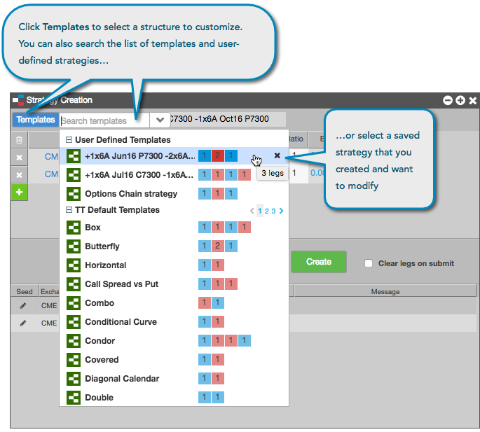

Click the Templates button in the Strategy Creation widget to view a list of the TT-provided Strategy Templates. You can select and edit these templates to customize your own exchange-supported strategies.
Note: These templates only provide a high level definition of the structure of the selected strategy, and are not an exact full definition of that structure.

For example the TT-provided Butterfly template will seed three legs with a ratio of Buy 1, Sell 2, Buy 1. However, the template will not ensure that the relationships between the legs match the exchange required comparisons: that is, all three legs are the same type (put, call, or future), and (if calls) the second leg strike must be greater than the first leg, and the third leg strike must be greater than the second leg. For a Butterfly options strategy, the months must all be the same on the three legs.
When you save a strategy, it appears in the User-Defined Strategies section of the Templates drop-down list. Click on a saved strategy to reload it in the strategy definition grid. Saved strategies can be deleted by clicking the "X" that appears on hover of a saved strategy in the Templates drop-down list.